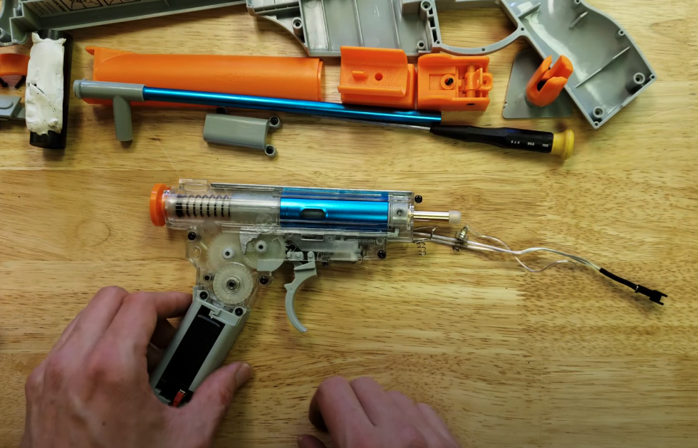
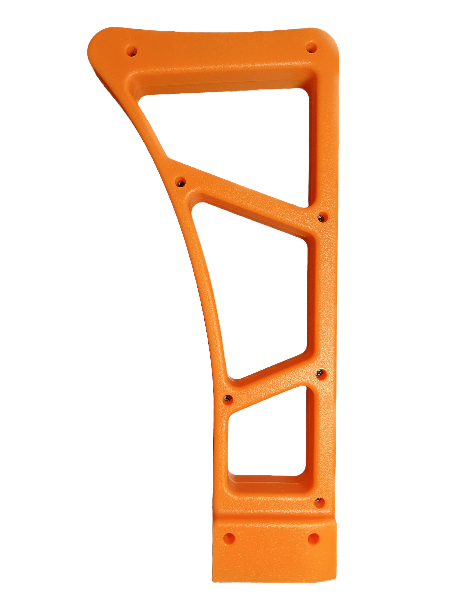

Magazine
Unlike the spring-powered mechanical magazines used in other imitation guns, toy gel bead blasters like the SPLATRBALL have a small electronic magazine that feeds the beads up into the gun's mechanisms to fire.
The 'orbeez' style 'ammo' for the SPLATRBALL starts out tiny and expands over 4 hours in water. When fired, the water beads explode on impact, causing minimal damage.

Battery
The SPLATRBALL has a small removable 7.4 volt 1800mah battery that connects under the muzzle and can be recharged via USB.
The battery is lower voltage than the typical "stick" batteries used in airsoft guns.
Gearbox mechanism
The SPLATRBALL has a spring piston gearbox mechanism similar to the gearboxes used in airsoft guns, but with larger clearances for the 'Orbeez' style water bead ammo and plastic nylon gears and components.
SPLATRBALL advertises a muzzle velocity of 200 feet per second. A knob selector allows you to switch between auto and semi-auto firing.

Dehydrated 'Ammo'
The blaster comes with ten "ammo" packs of 500 dehydrated water beads. The magazine holds up to 400 at a time, and the gun fires up to 8 'splatrballs' per second on full auto.
The beads grow in size by over 10x turning into squishy gel balls.
Bright colors and imitation guns
The SPLATRBALL and similar water bead blasters are brightly colored, complying with laws across the country for imitation and toy guns that requires toy guns look different from real firearms -- but some children and hobbyists have started modifying their toys to look like the guns they're visually based off of.
SPLATRBALL explicitly warns users not to modify their guns to look more realistic, but examples of guns painted black or modified with accessories have been shared across social media.
Stock and scope
The blaster comes with colorful accessories in the style of airsoft and paintball guns, including a removable stock and a faux-scope.